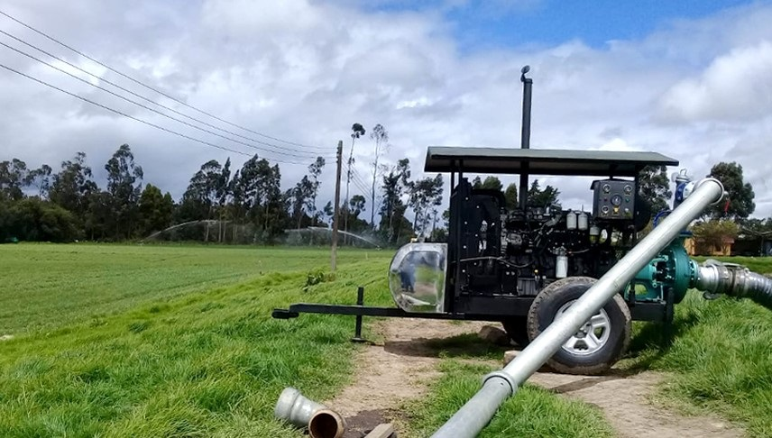

El Riego y Tipos de Riego
En el mundo agrícola, el riego es un factor crucial para el éxito de las cosechas, asegurando que los cultivos reciban la cantidad adecuada de agua para su crecimiento óptimo. Cuando los suelos carecen de agua o las precipitaciones son insuficientes, se requiere de sistemas de riego eficientes para suplir esta necesidad de manera artificial.
Tipos de Riego:
Los diferentes tipos de riego ofrecen ventajas y desventajas, y la elección del más adecuado depende de una serie de factores que deben considerarse cuidadosamente:
Riego por aspersión:
- Ventajas:
- Es el método más común y adaptable.
- Cubre grandes áreas de terreno de manera uniforme.
- Puede automatizarse para mayor eficiencia.
- Ofrece una vida útil larga.
- Desventajas:
- Puede haber pérdidas por evaporación.
- Requiere una alta presión de agua.
- El viento puede afectar la distribución del agua.
Riego por goteo:
- Ventajas:
- Minimiza las pérdidas por evaporación y escorrentía.
- Permite la aplicación precisa de agua y nutrientes.
- Conserva la humedad del suelo y las malezas son menos propensas a desarrollarse.
- Puede utilizarse en terrenos con pendientes.
- Desventajas:
- Requiere una inversión inicial mayor para la instalación del sistema.
- Se pueden obstruir los goteros si el agua no es filtrada adecuadamente.
- Requiere un mantenimiento regular para evitar obstrucciones.
Riego por microaspersión:
- Ventajas:
- Permite una aplicación uniforme del agua.
- Es adecuado para cultivos de tamaño reducido y áreas con pendientes.
- Puede ser utilizado en invernaderos y viveros.
- Desventajas:
- Requiere un mayor consumo de agua en comparación con el riego por goteo.
- Los equipos pueden obstruirse fácilmente con sedimentos o partículas.
Riego hidropónico:
- Ventajas:
- Ofrece un control preciso de los nutrientes y el agua.
- Permite un crecimiento más rápido y productivo de las plantas.
- No requiere suelo, lo que reduce el riesgo de enfermedades de las plantas.
- Desventajas:
- Requiere una inversión inicial significativa en equipos y sistemas.
- La instalación y el mantenimiento pueden ser complicados.
- La dependencia de sistemas técnicos puede aumentar la vulnerabilidad a fallos.
Riego por nebulización:
- Ventajas:
- Refresca el ambiente y reduce la temperatura en áreas calurosas.
- Puede mejorar la calidad del aire y reducir el estrés térmico en las plantas.
- Puede ser programable para optimizar el uso del agua.
- Desventajas:
- Puede aumentar la humedad ambiental, lo que puede favorecer el desarrollo de enfermedades fúngicas.
- Requiere un suministro constante de agua y electricidad.
- Los sistemas de nebulización pueden ser costosos de instalar y mantener.
Riego por gravedad:
- Ventajas:
- Es un método económico y simple de implementar.
- No requiere energía adicional para la distribución del agua.
- Es adecuado para terrenos llanos y extensos.
- Desventajas:
- La eficiencia puede ser baja debido a la escorrentía y la evaporación.
- No es adecuado para terrenos con pendientes pronunciadas.
- Puede generar erosión del suelo si no se maneja correctamente.
Riego por inundación:
- Ventajas:
- Es adecuado para terrenos planos y extensos.
- Requiere una inversión inicial baja en comparación con otros métodos de riego.
- Es fácil de implementar y no requiere equipos sofisticados.
- Desventajas:
- Puede causar pérdidas de agua por escorrentía y evaporación.
- No es adecuado para todos los tipos de cultivos.
- Puede aumentar el riesgo de enfermedades y la compactación del suelo.
Consideraciones generales para la selección del tipo de riego:
- Tipo de cultivo: Cada tipo de cultivo tiene requerimientos específicos de agua y nutrientes, lo que influirá en la elección del método de riego más adecuado.
- Topografía del terreno: La pendiente y la forma del terreno pueden afectar la eficiencia y la viabilidad de ciertos métodos de riego.
- Calidad del agua: Es importante analizar la calidad del agua disponible para el riego, ya que ciertos tipos de riego pueden requerir agua con características específicas.
- Condiciones climáticas: El clima local, incluyendo la temperatura, la humedad y la cantidad de lluvia, puede influir en la selección del método de riego más apropiado.
- Tipo de suelo: La textura, la capacidad de retención de agua y la estructura del suelo pueden afectar la distribución y la infiltración del agua, lo que debe considerarse al elegir el método de riego.
- Accesibilidad y recursos disponibles: Factores como el acceso a la energía, la mano de obra y los recursos financieros pueden limitar las opciones de riego disponibles para un agricultor.
- Impacto ambiental: Es importante considerar el impacto ambiental de cada método de riego, incluyendo el consumo de agua, la erosión del suelo y la contaminación, para minimizar los efectos negativos en el medio ambiente.
Al seleccionar el tipo de riego más adecuado, es fundamental realizar un análisis detallado de estos factores y evaluar cuidadosamente las ventajas y desventajas de cada método para garantizar un uso eficiente del agua y obtener los mejores resultados en términos de cantidad y calidad de la producción agrícola.
Impacto del Clima y Medio Ambiente en la Agricultura y el Riego
La agricultura moderna ha integrado sistemas tecnológicos y de riego avanzados, como drones y sistemas automatizados, para optimizar la gestión de los cultivos. El agua es un recurso crítico en la agricultura y su control mediante sistemas de riego es fundamental para garantizar un crecimiento uniforme de las plantas.
La diversificación de los sistemas de riego, como la fertirrigación, hidropónico, aspersión y goteo, ha permitido a los agricultores adaptarse a condiciones climáticas cambiantes y compensar la escasez de lluvias. Sin embargo, la elección del sistema adecuado requiere considerar varios factores, como la topografía, calidad del agua, clima y tipo de suelo, así como el tipo de cultivo.
El uso ineficiente del agua en la agricultura representa un desafío importante, con la mayoría de los sistemas de riego desperdiciando hasta un 80% del agua utilizada. La mala gestión puede tener consecuencias graves, como la erosión del suelo y la contaminación del agua, lo que afecta tanto a la fauna como a las comunidades dependientes de los recursos hídricos.
Es fundamental una planificación detallada en la implementación de sistemas de riego para maximizar la productividad agrícola y minimizar los impactos ambientales negativos. Esto implica no solo mejorar las condiciones de los agricultores y fortalecer su competitividad, sino también garantizar la sostenibilidad ambiental a largo plazo.
COMPORTAMIENTO Y REACCIÓN DEL AGUA EN EL SUELO
El suelo y el agua son dos recursos cruciales que directa o indirectamente afectan nuestras actividades cotidianas. El suelo es un material poroso y el agua se almacena y fluye en la red conectada de poros (Figura 1). El arreglo físico del espacio poroso del suelo influye en la actividad biológica del suelo (por ejemplo en el crecimiento de las raíces) y afecta a muchos procesos importantes, por ejemplo la absorción de nutrientes por las plantas.
En el momento en que el agua llega a la superficie del suelo, ya sea por precipitación o por el riego artificial, se infiltra en el suelo por gravedad; de esa manera el agua llena progresivamente todos los poros del suelo, grietas y fisuras, alcanzando así su máxima capacidad para almacenar agua. En este caso, el agua de lluvia ya no podrá almacenarse en el suelo, pero podrá utilizarse para la recarga de los arroyos o ríos y de esta manera contribuye en el mantenimiento de los caudales ecológicos de los cuerpos de agua superficiales (Figura 2).
El movimiento del agua a través del suelo se produce más rápido en poros grandes como grietas, fisuras y macroporos (> 75 μm) del suelo. En estas condiciones, las moléculas de agua no están unidas a las partículas de la matriz del suelo, lo que resulta en un flujo rápido a través de la columna de suelo, transportando productos químicos y coloides en solución (por ejemplo minerales disueltos y sustancias orgánicas) a los mantos acuíferos.
En el momento que se interrumpe la entrada de agua (lluvia o riego artificial) al suelo, el aire comienza a reemplazar al volumen de agua que drena al manto freático desde los poros grandes del suelo. Los poros más pequeños, mesoporos (30-75 μm) y microporos (5-30 μm) permanecen llenos de agua, como resultado de la atracción de las moléculas de agua por las partículas de la matriz del suelo, siendo esa atracción mayor que la fuerza de gravedad.
La fuerza de atracción de la matriz del suelo es la que determina la capacidad del suelo para retener agua. Así que, cuanto mayor es la capacidad para almacenar agua, más puede actuar el suelo como depósito de agua para la realización de las funciones de la planta y del ecosistema en general. El agua que se encuentra en el espacio capilar no está sujeta a la fuerza de gravedad, por lo que no drena, sin embargo puede perderse del suelo por evaporación a través de los efectos de la temperatura y el viento, y por el proceso de transpiración de las plantas.
El agua que se libera del suelo a la atmósfera por estos procesos (evaporación y transpiración), teóricamente corresponde al agua disponible para las plantas. Como el aire reemplaza progresivamente el agua del espacio poroso, el suelo se seca y el agua restante es retenida cada vez con mayor fuerza por la matriz del suelo (Figura 3).
En este momento la influencia de la fuerza capilar sobre las moléculas de agua disminuye y es reemplazada por la fuerza de adsorción de la matriz del suelo. La cantidad, el tamaño y el arreglo de los poros del suelo, y el área de la superficie específica de las partículas del suelo son las principales variables que determinan la capacidad del suelo para la retención y la percolación del agua dentro de la columna de suelo.
El contenido de agua del suelo es una variable crucial del sistema climático. Los intercambios entre el suelo y la atmósfera están regulados por las variaciones del contenido de agua del suelo y la evapotranspiración, en donde el agua convertida en vapor se libera a la atmósfera para formar nubes. El proceso de evapotranspiración produce una reacción negativa en la temperatura local por el consumo de energía, amortiguando los extremos de calor y regulando las ondas de calor. El proceso de evapotranspiración continúa hasta el estado seco del suelo. En este momento (estado seco del suelo), los aumentos de temperatura que se presenten no podrán ser amortiguados por ningún incremento posterior en la evapotranspiración. Esto nos explica por qué una restricción en el intercambio de agua entre el suelo y la atmósfera, por la impermeabilización (zonas urbanas) del suelo, puede dar lugar a un aumento masivo en la temperatura. El sellado del suelo (Figura 4) es el revestimiento de la superficie del suelo por la construcción de edificios o por el uso de material impermeable como asfalto, hormigón, etc. El sellado del suelo modifica el balance natural del agua y afecta drásticamente la capacidad de infiltración del suelo y la evapotranspiración en general. Con el sellado, el agua ya no se infiltra más en el suelo, situándose la tasa de infiltración en 0%, ocasionando inundaciones, principalmente en las ciudades. El contenido de agua del suelo es un elemento estructurador de la biodiversidad, por ejemplo especies vegetales desarrollan adaptaciones específicas en hábitats bajo condiciones extremas, tales como desiertos y humedales.
LOS SISTEMAS DE RIEGO EN LA AGRICULTURA MODERNA Y SUS TÉCNICAS DE APLICACIÓN
¿QUÉ ES UN SISTEMA DE RIEGO LINEAL?
Un sistema de riego lineal es un método mecanizado de entregar agua a los cultivos en línea recta. Es
particularmente adecuado para campos rectangulares o cuadrados. El sistema consiste en una serie de tramos de
tubería, generalmente soportados por torres con ruedas, que se mueven de ida y vuelta a través del campo. Estos
tramos tienen aspersores en la parte superior, en bajantes, o emisores de riego por goteo para distribuir el agua
de manera uniforme a través del cultivo.
¿CÓMO SE MUEVEN LOS SISTEMAS DE RIEGO LINEAL?
Los sistemas de riego lineal, también conocidos como sistemas laterales, se mueven lateralmente a través del
campo. Por lo general, motores eléctricos o turbinas hidráulicas impulsan el movimiento al conducir las ruedas de
las torres. Estas ruedas están sincronizadas para asegurar que todo el sistema se mueva en línea recta, cubriendo
toda la anchura del campo. El diseño del sistema permite que se mueva a una velocidad constante, lo que permite un
control preciso de la aplicación de agua. Después de que el sistema cruza todo el campo, invierte la dirección y
regresa al punto de partida. Los sistemas de riego lineal también pueden estar equipados con sistemas de guiado
GPS para asegurar un movimiento preciso.
¿CÓMO FUNCIONA EL RIEGO LINEAL?
Los sistemas de riego lineal suministran una cantidad controlada de agua directamente a los cultivos. El agua
generalmente se suministra desde un canal o es alimentada por una manguera desde un hidrante y fluye a través de
la tubería principal. A medida que el sistema de riego lineal avanza lentamente, dispensa agua a través de los
aspersores o emisores de goteo para cubrir hasta el 98 por ciento de un campo cuadrado o rectangular.
Los agricultores pueden ajustar la velocidad del sistema lineal en función de factores como el tipo de suelo, las necesidades del cultivo y las condiciones climáticas para asegurar una distribución efectiva del agua. Esta flexibilidad les permite optimizar el uso del agua.
¿CUÁL ES LA DIFERENCIA ENTRE EL RIEGO LINEAL Y EL RIEGO POR PIVOTE?
El riego lineal y el riego por pivote central son métodos efectivos para irrigar campos pequeños o grandes, pero
presentan algunas diferencias clave:
- Patrón de Movimiento:
- Riego Lineal: Se mueve lateralmente en línea recta, cubriendo un área cuadrada o rectangular.
- Riego por Pivote Central: Gira alrededor de un punto central, cubriendo un área circular.
- Forma del Campo:
- Riego Lineal: Ideal para campos pequeños o grandes, cuadrados o rectangulares. Dependiendo del suministro de agua, el sistema también puede adaptarse para regar campos en forma de L. Los campos planos son los más adecuados.
- Riego por Pivote Central: Funciona bien en campos grandes, ya sean cuadrados, circulares o de formas irregulares. Aunque los campos planos son los mejores, los sistemas pueden diseñarse para adaptarse a cambios de elevación en el terreno. Los sistemas de riego de esquina pueden ayudar a irrigar las áreas triangulares fuera de la cobertura circular.
- Eficiencia Hídrica:
- Riego Lineal: Permite una distribución de agua constante en todo el cultivo.
- Riego por Pivote Central: Utiliza diferentes tamaños de boquillas para controlar el caudal de los aspersores según su ubicación a lo largo del pivote, asegurando una aplicación de agua controlada a través del campo.
BENEFICIOS DE LOS SISTEMAS DE RIEGO LINEAL
- Distribución Precisa del Agua: Los sistemas de riego lineal ofrecen un control excelente sobre la aplicación del agua, ayudando a asegurar que los cultivos reciban la cantidad adecuada de humedad.
- Versatilidad: Estos sistemas se adaptan a diferentes formas de campo, haciéndolos adecuados para varios tipos de configuraciones agrícolas.
- Aplicación Consistente de Agua: Dado que los sistemas aplican la misma cantidad de agua en cada salida, son ideales para la quimigación y fertirrigación, facilitando así mayores rendimientos. Estos sistemas son adecuados para aplicaciones de agua a tasas bajas, lo que evita la escorrentía en el campo.
- Mayor Rendimiento de los Cultivos: Los sistemas de riego lineal a menudo se utilizan en cultivos de mayor valor donde la aplicación precisa del agua es crítica.
- Ahorro de Mano de Obra: Los sistemas lineales mecanizados requieren mucho menos trabajo manual que los métodos de riego por inundación, alas móviles rodantes y móviles a mano.
COMPONENTES PRINCIPALES DE LAS INSTALACIONES DE RIEGO
- Sistema de riego por goteo
Instalaciones de Riego
Desde 1978 Novedades Agrícolas trabaja diseñado e instalando Sistemas de Riego para todo tipo de cultivos, diferentes tamaños de fincas, así como en diferentes países alrededor del mundo.
Todos estos años de experiencia han permitido a nuestra empresa evolucionar en los sistemas de riego de la mano de nuestros clientes, lo que ha tenido como consecuencia final que tanto nuestro equipo técnico como nuestros instaladores posean una vasta experiencia en todo tipo de instalaciones de riego.
Aumentos de costos y disminución de beneficios en el campo de la agricultura ha contribuido a diseñar instalaciones cada vez más energéticamente y económicamente eficientes.
Los componentes de una instalación varían dependiendo del sistema de riego utilizado por el agricultor, a continuación veremos los componentes principales de un sistema de riego por goteo, que seguramente sea el más utilizado dentro de la Agricultura de precisión.
COMPONENTES DE UNA INSTALACIÓN DE RIEGO AGRÍCOLA
Los componentes principales de un sistema de riego agrícola por goteo son los siguientes:
- Embalse:
Su función es la de reserva de agua y garantizar su disponibilidad para el suministro del riego, así como guardar esta cuando se riega por turnos. - Cabezal de riego:
Básicamente un cabezal de riego consta de equipo de bombeo, equipo de filtrado y equipo abonado, se podría decir que es el cerebro de un sistema de riego. - Red de riego:
Es el sistema de tuberías que permite el transporte del agua de riego (y el abono en el caso del fertirriego) desde el cabezal hasta los emisores de riego colocados junto a las plantas. - Emisores de riego:
Son los encargados de suministrar el agua a las plantas (goteros). - Elementos de control:
Son todos los dispositivos que nos ayudan a controlar todo el proceso de riego, desde contadores hasta electroválvulas. Todos estos elementos estarían en un dentro de un diseño estándar, pero por ejemplo si el sistema de riego fuera por aspersión, cambiaríamos las tuberías portaemisores por Aspersores.
Máquinas de riego
Equipos Automatizados | Enrollador | Pivote
Los equipos automatizados son equipos de riego mecanizados para el riego por aspersión. De alta innovación y última tecnología son la solución para el riego de grandes cultivos. Es la inversión perfecta para un correcto sistema de riego práctico, eficiente y de fácil operación. Dentro de estos productos se encuentra el Carrete de Riego (o enrollador) y el Pivote de riego.
Aspersores y Cañones de Riego
Los aspersores de riego y cañones son emisores de agua. Son utilizados en la mayoría de los sistemas de riego agrícola.
Encuentre en esta sección diferentes aspersores y cañones para riego por aspersión. Aspersores, mini aspersores y cañones de largo alcance de algunas marcas como: Senninger, Yuzuak, Vyrsa y Bauer. Variedad en presión y alcance.
Bombas, Tractobombas y Motores | Ensambles
Las bombas, tractobombas y motores son utilizados como proceso mecánico del equipo de riego. Según las necesidades, características y metodología para regar, se ajustan al sistema y tipo de energía que se requiera.
A continuación, algunos ejemplos de montajes y ensambles agrícolas, como de productos finales.
Riego por Goteo | Microaspersión | Inyección
El riego por goteo y micro aspersión es conocido también como riego localizado o riego gota a gota. Utilizado para zonas áridas, cultivos específicos o para riego con fertilizantes. Las gotas de líquido son infiltradas directamente al suelo, lo que permite una exactitud y ahorro del recurso hídrico.
Algunos elementos de aplicación son: goteros, filtros, inyectores y fertirigación.
Accesorios de Riego | Acoples | Conducción
Los accesorios de riego son los elementos adicionales con los cuales se elabora un sistema de riego completo. Son los accesorios de conducción. Realizamos todo tipo de instalación de riego según necesidades y características del terreno, cultivo y tipo de energía. Utilizamos y ofrecemos diversos accesorios de riego como: mangueras, tubería, manómetros, acoples y acoples en aluminio y acero. Fabricamos piezas especiales para un óptimo resultado en la operación.
LA FERTIIRRIGACIÓN
Fertirrigar es aportar al suelo los nutrientes que necesitan los cultivos, mediante el agua de riego. Si bien ha sido utilizada con éxito en riego por gravedad y aspersión, la fertirrigación es especialmente útil en el caso del riego localizado, puesto que los métodos tradicionales de fertilización son menos compatibles con este tipo de riego. El aporte de los nutrientes se efectuará usualmente mediante dispositivos instalados en el cabezal, aunque también pueden instalarse en cabeza de cada sector o unidad operacional. De cualquier modo, y especialmente en el caso del riego localizado, siempre deberá instalarse un filtro de malla, para retener los eventuales precipitados que se pudiesen producir.
Por último, debe tenerse en cuenta que estos equipos también pueden ser utilizados para aportar al agua de riego otros tipos de sustancias, como puedan ser correctivos químicos, nematocidas, pesticidas, etc.
a- En función del grado de asociación de los agricultores:
- Colectiva: los equipos de fertirrigación se instalan a nivel comunidad de regantes o a nivel de pequeña agrupación de agricultores para ahorrar costes de explotación de los sistemas. La fertirrigación colectiva debe ir asociada a un manejo del riego por turnos y a la posibilidad del mayor grado de automatización.
- Individual: cada agricultor de manera individual cuenta con un equipo de fertirrigación.
b- En función del modo en que se realiza la fertirrigación:
- Fraccionada: los nutrientes sólo se aplican en determinados períodos del año, coincidiendo con desarrollos fenológicos determinados. La ventaja de este método de fraccionamiento es que los nutrientes se aplican al cultivo en el momento que los necesita.
- Continua: se inyectan los nutrientes de modo continuo a bajas dosis en la red, de este modo, los nutrientes están disponibles en el bulbo húmedo en cualquier momento que la planta pudiera necesitarlos.
LA FERTIIRRIGACIÓN
Fertirrigar es aportar al suelo los nutrientes que necesitan los cultivos, mediante el agua de riego. Si bien ha sido utilizada con éxito en riego por gravedad y aspersión, la fertirrigación es especialmente útil en el caso del riego localizado, puesto que los métodos tradicionales de fertilización son menos compatibles con este tipo de riego. El aporte de los nutrientes se efectuará usualmente mediante dispositivos instalados en el cabezal, aunque también pueden instalarse en cabeza de cada sector o unidad operacional. De cualquier modo, y especialmente en el caso del riego localizado, siempre deberá instalarse un filtro de malla, para retener los eventuales precipitados que se pudiesen producir.
Por último, debe tenerse en cuenta que estos equipos también pueden ser utilizados para aportar al agua de riego otros tipos de sustancias, como puedan ser correctivos químicos, nematocidas, pesticidas, etc.
a- En función del grado de asociación de los agricultores:
- Colectiva: los equipos de fertirrigación se instalan a nivel comunidad de regantes o a nivel de pequeña agrupación de agricultores para ahorrar costes de explotación de los sistemas. La fertirrigación colectiva debe ir asociada a un manejo del riego por turnos y a la posibilidad del mayor grado de automatización.
- Individual: cada agricultor de manera individual cuenta con un equipo de fertirrigación.
b- En función del modo en que se realiza la fertirrigación:
- Fraccionada: los nutrientes sólo se aplican en determinados períodos del año, coincidiendo con desarrollos fenológicos determinados. La ventaja de este método de fraccionamiento es que los nutrientes se aplican al cultivo en el momento que los necesita.
- Continua: se inyectan los nutrientes de modo continuo a bajas dosis en la red, de este modo, los nutrientes están disponibles en el bulbo húmedo en cualquier momento que la planta pudiera necesitarlos.
c- En función de los dispositivos que inyectan la solución:
- Fertilizadores tipo Venturi: Son los dispositivos más sencillos de todos y por tanto los de menor precio, menor mantenimiento y mayor durabilidad. El venturi es un dispositivo que se suele instalar en paralelo con la red y que posee un estrechamiento en la sección de paso.
- Inyectores: De nuevo en este caso los depósitos no están sometidos a la presión de la red de riego. En este caso la solución se inyecta a la red mediante motores convencionales (lo más frecuente) o mediante bombas de accionamiento hidráulico.
- Tanques de fertilización: Se trata de tanques, conectados en paralelo con la red, que contienen en su interior la solución fertilizante. Estos tanques se encuentran a la misma presión que el resto de la red, por tanto han de ser estancos. Los materiales mas usuales suelen ser el plástico o la fibra de vidrio, en cualquier caso deben ser resistentes a la corrosión a la que serán sometidos. Su funcionamiento se basa en la instalación de dos válvulas (una en el tubo de entrada y otra en el tubo de salida) que generan una pequeña diferencia de presiones para que salga la solución fertilizante. La perdida de carga mínima para que funcionen es de 3 mca. Si bien el volumen de agua que entra en el tanque es el mismo volumen de solución fertilizante inyectada en la red, la regulación precisa de las cantidades aportadas es complicada. Según diversas ecuaciones, cuando haya circulado por un tanque convencional un volumen igual a su capacidad total, aún quedará en su interior el 37 % de la solución fertilizante.
Actividad Modulo 2: Simulación de Diseño de un Sistema de Riego Eficiente con Fertiirrigación
Objetivo:
Utilizar los conocimientos adquiridos sobre riego, tipos de riego, efectos climáticos en cultivos, comportamiento del agua en suelo, sistemas de riego modernos y fertiirrigación para diseñar un sistema eficiente para un cultivo específico.
Pasos:
-
Investigación y Planificación:
- Investigar necesidades de riego del cultivo asignado, condiciones climáticas locales y comportamiento del agua en el suelo.
- Seleccionar el sistema de riego más adecuado y diseñar un sistema completo, incluyendo componentes y fertiirrigación.
-
Debate y Conclusiones:
- Discutir desafíos enfrentados durante el diseño del sistema y lecciones aprendidas.
- Reflexionar sobre la importancia de considerar todos los aspectos estudiados para lograr eficiencia y sostenibilidad en el riego.
Beneficios:
- Integración práctica de conceptos de riego y fertiirrigación.
- Desarrollo de habilidades de planificación y toma de decisiones en un contexto agrícola.
- Fomento del trabajo en equipo y la colaboración en la resolución de problemas.
Esta actividad proporciona una experiencia práctica y educativa para los participantes, permitiéndoles aplicar sus conocimientos teóricos en un escenario real de diseño de sistemas de riego agrícola.